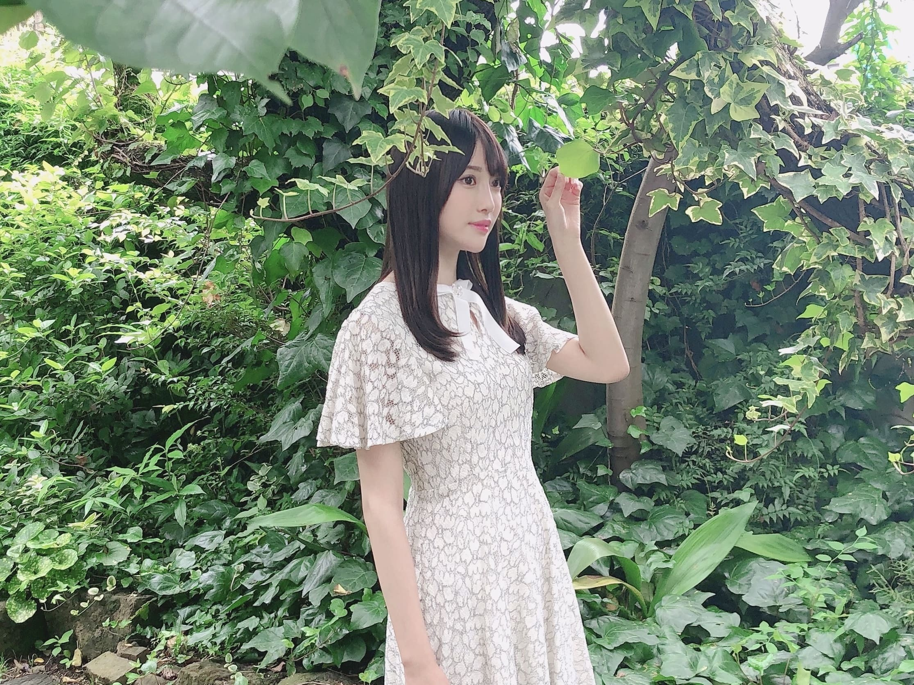
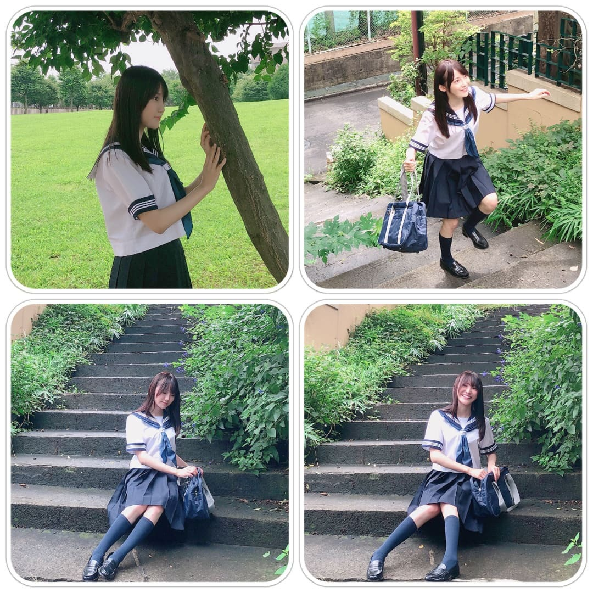
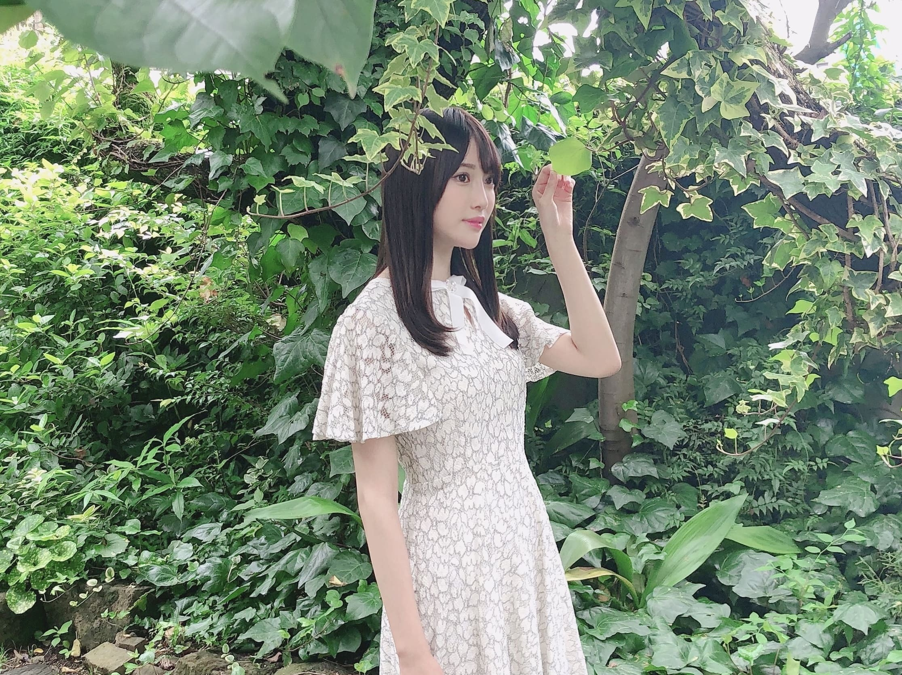
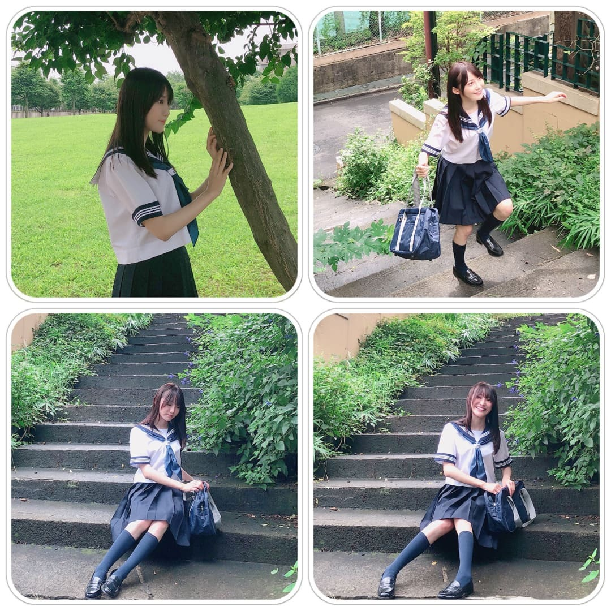
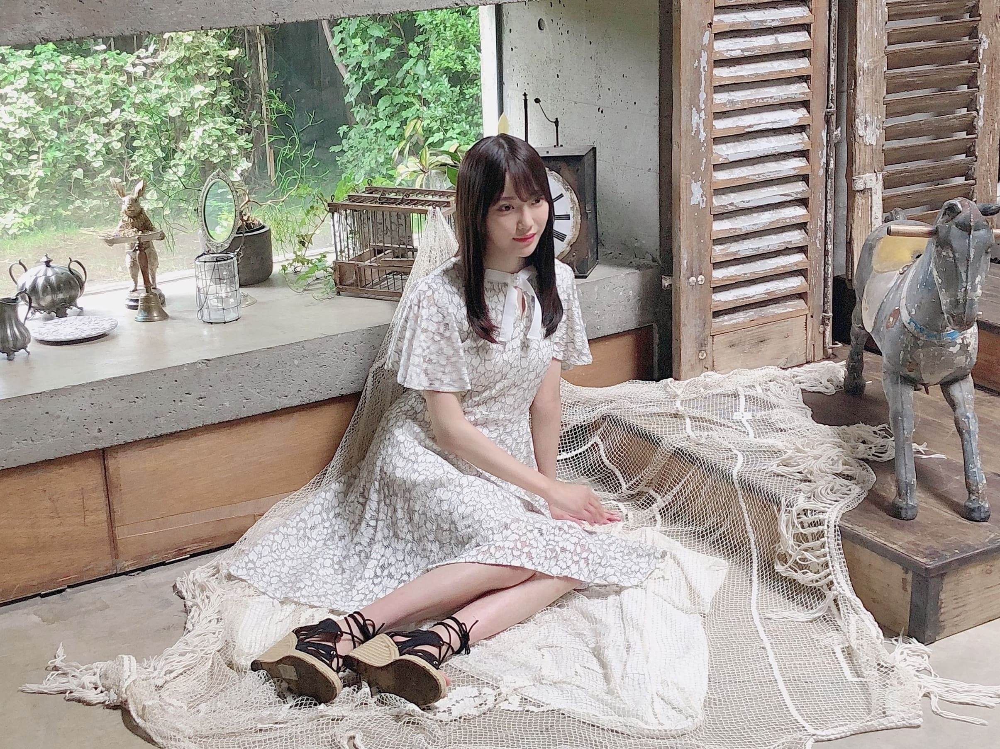
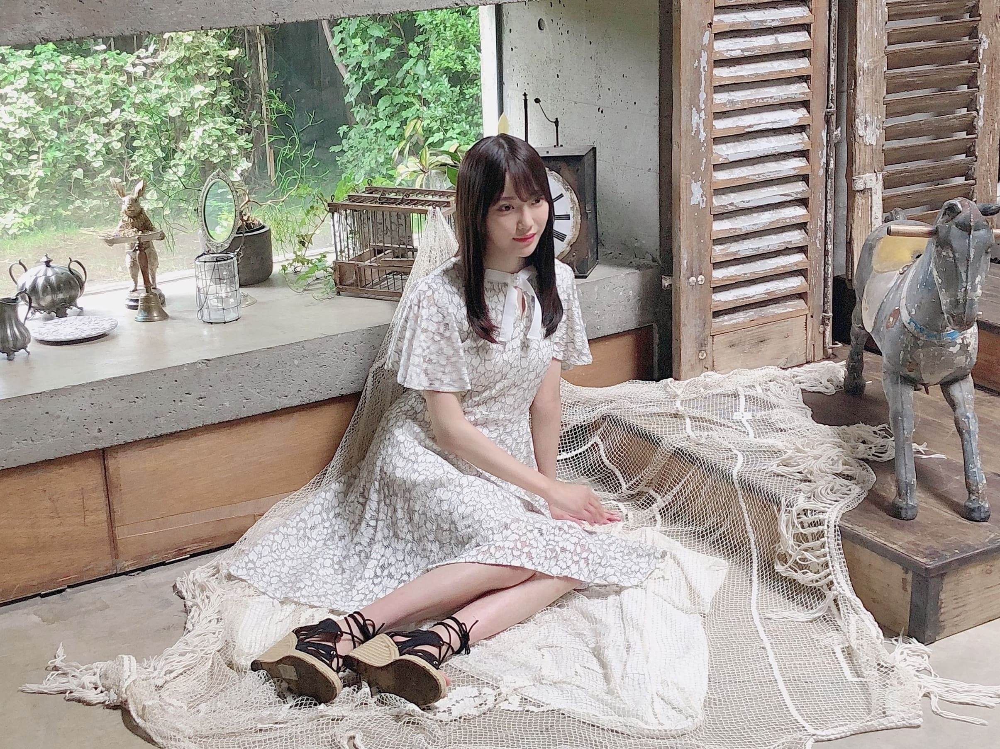
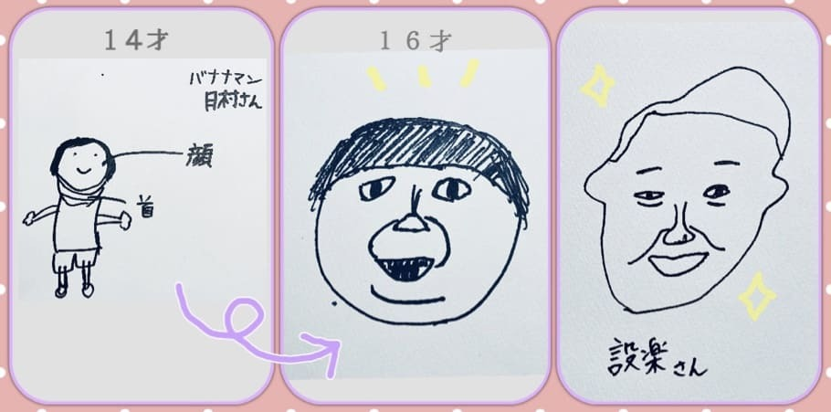
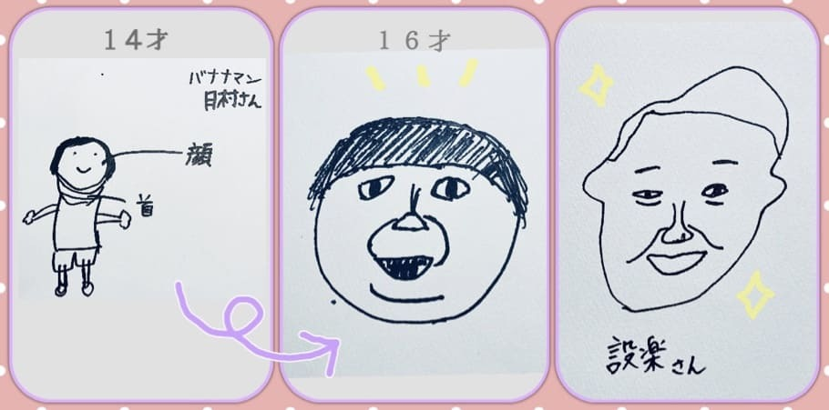

2020/0830Sun放課後の寄り道 ☺︎ 黒見明香
暑い中、今週も本当にお疲れ様でした✩︎⡱
ココを見つけてくださり ありがとうございます♪
乃木坂46 新４期生の黒見明香です。
すこーしだけ自己紹介させてくださいませ☺︎
♪:*:･･:*:･･:*:･･:*:･･:*:･･:*:･♪:*:･･:*:･･:*:･･:*:･･:*:･･:*:･♪
黒見 明香（くろみ はるか）
2004年1月19日生まれ 16才
香港生まれ・東京都出身です
あだ名： くろみん・黒見ちゃん
3の倍数9・6・3(くろみ)
と覚えてもらえたら嬉しいです♪
＊
いただいたコメントから↓
◎おっちょこちょいエピソード好きだからもっとききたいー
小学生の頃、夏休み明けのこの季節は、
なんだか朝も すごーく眠たくて・・・
お得な気がして^^; なるべく目をつぶって学校の用意をしていました。
玄関に置いていた、図工用のティッシュの空き箱を
手探りで、一つずつ足にはめて、
ずるずるとティシュ箱を履きながら外に出てきました。
歩いていた方に、
「お嬢ちゃん、靴がティッシュの箱だよ！」
と言われて、"えええっ・・・Σ（ﾟдﾟll）！？"
てなって、慌てて、目を開けて、家に戻りました。
マッチ売りの少女を思い出しました。。。
あのまま学校に行っていたら、
「テェッシュー」のような
あだ名になってた気がします(*´-`)
テェッシューの秘密、初めてブログはここだよ〜↓☺︎
https://blog.nogizaka46.com/newfourth/2020/04/056034.php
♪:*:･･:*:･･:*:･･:*:･･:*:･･:*:･♪:*:･･:*:･･:*:･･:*:･･:*:･･:*:･♪
-:-:୨୧:-:- 中・高ブレザーなので、「セーラー服」嬉しかったです✩︎⡱
【 アップトゥボーイさん✨ 】
⚫︎アップトゥボーイのオフショットのアップが欲しいよ～？
⚫︎裏話も聞けて、また掲載されている写真を見ると違った見方が出来て楽しいですね！出来ればもっと載せてほしいです！
美しい表紙の久保史緒里さん♡も、胸キュンな裏表紙の伊藤理々杏さん♡も、
♪:*:･･:*:･･:*:･･:*:･･:*:･･:*:･♪:*:･･:*:･･:*:･･:*:･･:*:･･:*:･♪

-:-:୨୧:-:- 初めてのポストカードを撮っていた時のオフショット！緊張してますね☺︎笑
⚫︎モノボケやる機会があったら明香さん、次は何のキャラでいくんですか？笑
♪:*:･･:*:･･:*:･･:*:･･:*:･･:*:･♪:*:･･:*:･･:*:･･:*:･･:*:･･:*:･♪

-:-:୨୧:-:- 「鞄に何入ってるのー？覗いてみて？」とのご指示で覗いて見ると・・・
【 ４期生のおはなし♪ 】
⚫︎先日のANNでは、かっきーが「黒見ちゃんは一緒に仕事して終わったら必ず連絡くれる」エビソード話してたね。聞いた？
⚫︎前回のブログの"ノギザカスキッツ"のところ、文コピペしてたら、筒井あやめちゃんのお名前が消えてしまっていてごめんなさい。（ブログが掲載された後、すぐあやめちゃんに連絡してお詫びしました><）
ココを見つけてくださり ありがとうございます♪
乃木坂46 新４期生の黒見明香です。
すこーしだけ自己紹介させてくださいませ☺︎
♪:*:･･:*:･･:*:･･:*:･･:*:･･:*:･♪:*:･･:*:･･:*:･･:*:･･:*:･･:*:･♪
黒見 明香（くろみ はるか）
2004年1月19日生まれ 16才
香港生まれ・東京都出身です
あだ名： くろみん・黒見ちゃん
3の倍数9・6・3(くろみ)
と覚えてもらえたら嬉しいです♪
＊
いただいたコメントから↓
◎おっちょこちょいエピソード好きだからもっとききたいー
小学生の頃、夏休み明けのこの季節は、
なんだか朝も すごーく眠たくて・・・
お得な気がして^^; なるべく目をつぶって学校の用意をしていました。
玄関に置いていた、図工用のティッシュの空き箱を
手探りで、一つずつ足にはめて、
ずるずるとティシュ箱を履きながら外に出てきました。
歩いていた方に、
「お嬢ちゃん、靴がティッシュの箱だよ！」
と言われて、"えええっ・・・Σ（ﾟдﾟll）！？"
てなって、慌てて、目を開けて、家に戻りました。
マッチ売りの少女を思い出しました。。。
あのまま学校に行っていたら、
「テェッシュー」のような
あだ名になってた気がします(*´-`)
テェッシューの秘密、初めてブログはここだよ〜↓☺︎
https://blog.nogizaka46.com/newfourth/2020/04/056034.php
♪:*:･･:*:･･:*:･･:*:･･:*:･･:*:･♪:*:･･:*:･･:*:･･:*:･･:*:･･:*:･♪
-:-:୨୧:-:- 中・高ブレザーなので、「セーラー服」嬉しかったです✩︎⡱
【 アップトゥボーイさん✨ 】
⚫︎アップトゥボーイのオフショットのアップが欲しいよ～？
⚫︎裏話も聞けて、また掲載されている写真を見ると違った見方が出来て楽しいですね！出来ればもっと載せてほしいです！
ただいま発売中の 『 アップトゥボーイ Vol.294 』
たくさんの感想や、このページが好き！
インタビュー読んだよー、驚いたよ！など
コメントたくさん寄せてくださり、
本当にありがとうございます((〃ω〃))✨
皆んなの元に届いて、見てもらえること
とっても嬉しいです♡
＊
ディスタンを守って撮影しているので、
どーしても、オフショット・アップ写真が
むずかしいのですが、マネージャーさんも
遠くから、たくさん撮ってくださったので、
よかったら、今回も、
"オフショット後半戦" 載せさせてくださいね☺︎
⚫︎通学バッグを高く上に放った写真があったのですが、あの後キャッチできたのでしょうか？
⚫︎鞄すっごい高く飛んでるね...3秒後にどうなったのか、気になります(笑)
"自然な表情撮りたいから"と、
『スクールバッグを思いきって、空に投げてみてー！』
というご指示をいただき・・・
"スタイリストさんからお借りしている大切なカバン、
雨で湿った地面には落とせぬ・・・汗"
と覚悟を決めて、めちゃ頑張りました！笑
＊
顔面キャッチした気がしなくもないのですが、
プロスピで鍛えた？選手のプレイをたくさん見ていたので、
『 動きが、完全にキャッチャーの フライの取り方やー！笑 』
と笑われながら、運動神経悪いながらも 奇跡的に✨
無事落とさずキャッチできましたよー (*ˊᵕˋ*)੭ やったぁー
自分でもびっくりでした驚！
美しい表紙の久保史緒里さん♡も、胸キュンな裏表紙の伊藤理々杏さん♡も、
見惚れてしまい、何度も見返しています。
畏れ多くも、憧れの先輩方と、こんなステキな誌面に
載せてくださる機会をいただいて感動しています✨
あたたかい雰囲気の中で、作品をつくってくださり、
忘れられない大切な一冊となりました✩︎⡱
もしよかったら、一度手にしてもらえたら嬉しいな((〃ω〃))

-:-:୨୧:-:- 初めてのポストカードを撮っていた時のオフショット！緊張してますね☺︎笑
（タワーレコード/タワレコオンライン限定だよ〜)
【 ノギザカスキッツ✨ 】
⚫︎Twitterで予告見ました！「黒見明香と弓木奈於がお兄ちゃん取り合い大ゲンカ」
⚫︎次回予告でくろみんうつってもう来週が待ち遠しいです！楽しみにしてます！
『メンタリストAYAME②』
AYAME様の催眠術✨すごかったです！！
今、思い出すだけで、
顔から火がでそうに恥ずかしいですが・・\(//∇//)\
よかったら、奈於ちゃんとわたしのお兄さんになったつもりで
観てみてくださいね♬
⚫︎ブログを読んだり、スキッツを見た感想？で言うと、年相当な部分があるね？
よく"大人っぽい"と言っていただくこともあるのですが、
中身が追いついていなくて、まだまだ子供っぽいので...
先輩方のような"素敵な大人の女性✨"になれるよう
たくさん学んでいきたいな！て日々思っています〜
⚫︎モノボケやる機会があったら明香さん、次は何のキャラでいくんですか？笑
『オラ、ワクワクすっぞ』の次はどうしましょ〜？笑
皆さんが笑ってくださるよう、ネタを練り練りしておきますね (*ˊᵕˋ*)੭
⚫︎モルックは上手く投げれそうですか？
「乃木坂どこへ」ですごく楽しそうで憧れていたので、
ぜひ一度やってみたいですー！！
皆さんとスペイベ？で「モルック対決」とか？
いつか一緒にしたいな〜☺︎
♪:*:･･:*:･･:*:･･:*:･･:*:･･:*:･♪:*:･･:*:･･:*:･･:*:･･:*:･･:*:･♪

-:-:୨୧:-:- 「鞄に何入ってるのー？覗いてみて？」とのご指示で覗いて見ると・・・
"中身は意外なアレが・・・！？"と、思わず笑っちゃった瞬間です(*´-`)笑
【 ４期生のおはなし♪ 】
⚫︎先日のANNでは、かっきーが「黒見ちゃんは一緒に仕事して終わったら必ず連絡くれる」エビソード話してたね。聞いた？
聞きましたよー♬
かっきーは超多忙なのに、たとえどんなに疲れていても、すごく強い気持ちを持って、大切な乃木坂を代表して頑張ってくれてるのです><
（きっと皆さんのほうが、よく知っていらっしゃるかもですね☺︎笑）
分厚い台本や資料読みながらも、私たちのしょーもない話にも付き合ってくれたり、
動きが分からなくてオロオロしていると、察して教えてくれたりと、
いつも助けられる事ばかりです(*´-`)
早く足をひっぱらないようにならないと！何か少しでもグループの役に立てる人になりたい・・・と思っています。
もちろん４期生のメンバー皆んな、
こんなあたたかい女の子達に巡り合える事あるのかな・・・
と思うくらい、心優しくて、大好きです((〃ω〃))
＊ ANNの続き ＊
新内眞衣さんにも、46時間TVで、個人ブースの
ヘンテコな 剣や「考えるな、感じろ。」色紙のこと笑
聞いて下さって、嬉しすぎて、お礼を伝えに言ってしまいました\(//∇//)\
璃果ちゃんさすが、本当に褒め上手で✨声も可愛くて、
癒されるコーナーでしたね〜ヾ(･ω･*)o
♬ *。♩*。♬
⚫︎くろみん、るなちゃんのブログ読みましたか？無人島に一つだけ持っていけるとしたらの質問に「くろみん」と答えてましたね笑
⚫︎ それだけ信頼感があるのでしょうね。あっ、でももしかしたら食料がなくなった時のため？
みましたー！笑 すっごく嬉しかったので、
直接、瑠奈ちゃんにも聞いたみたところ・・・
「くろみちゃんと２人でおったら、どうにかなる気がする！」
と答えてくれました (*ˊᵕˋ*)੭
・・・きっと、なんとかなりますよね！？笑
皆さんが心配してそうな気も・・・;;
一人でお出かけするのが苦手な瑠奈ちゃん
お手洗いもディスタンスで付き添っているので、
後ろから怪しい人みたいについてって見守っています(*´-`)
瑠奈ちゃんが一人で行けるようになったら寂しいなぁ...。。
⚫︎林瑠奈ちゃんとなにかやりましょう！きっと馬鹿ウケ間違いなしです。楽しみにしてるね。
何か喜んでいただける面白い一発芸？できるよう
瑠奈ちゃんと相談してみますねー！
⚫︎弓木ちゃんのブログの最後に生命線の話があって少し気になってしまいましたー。
くろみんの手相見てみたいな？
先日なおちゃんが「手相の見方」を教えてくれました！
いつか機会あったら手相、みてくださいねー笑
しばらく、美佑ちゃんや４期生のみんなで、
「ここが長い、短い！」と盛り上がっていました☺︎
『手相鑑定NAO』ちゃんコントが出来るかもしれないですよね(*´-`)？
⚫︎前回のブログの"ノギザカスキッツ"のところ、文コピペしてたら、筒井あやめちゃんのお名前が消えてしまっていてごめんなさい。（ブログが掲載された後、すぐあやめちゃんに連絡してお詫びしました><）
あやめちゃんは、"どうしたらいいかなぁ..."と相談すると
「こういう風にしてるよー！」と
心強いアドバイスをくれる、頼もしい存在です。
時々メイク中でも、眠くなって居眠りしちゃってる寝顔が
天使ですっごく可愛いくて、大好きです♡
♪:*:･･:*:･･:*:･･:*:･･:*:･･:*:･♪:*:･･:*:･･:*:･･:*:･･:*:･･:*:･♪

-:-:୨୧:-:-
⚫︎日向坂46さんのドキュメンタリーを見に行こうかと! くろみんは、見ましたか？
はい、
⚫︎「アザトカワイイ」のMV、見ましたか。新三期生も参加してたね？
たくさんのコメントや感想、
本当にありがとうございます✩︎⡱
今回、"初めてコメントしてみました" という方も、
"続きを報告するね！"と書いて下さる方も、
大切な時間を使ってお話しして下さり
本当にありがとうございます✨
あなたに出逢えた奇跡に、感謝しながら、
大事に、一つずつ全部読ませて頂いています((〃ω〃))
皆さんのことを知ることが出来る、
私の１日の中で『１番幸せな時間』です♩
直接お話しできる時が、 待ち遠しいです✩︎⡱
＊
今週も毎日暑い日が続いていて、、、
大変だったよー、疲れちゃったよーって方も
本当に、一週間 お疲れ様でした✩︎⡱
ここのところ頑張ってきた分、
きっと夏バテしちゃう時もあるかと思います。。
どうぞ、皆さんが 少しでも
ひとときリラックスできますように...✩︎⡱
と願っています(*´-`)
初めて会える日を、楽しみに待っています♪
＊
明日は、アクセサリーもオシャレな璃果ちゃんですよー♬
読んでくださり、本当にありがとうございます☺︎
次回も、会えたら嬉しいなぁ✨
またねヾ(･ω･*)
くろみはるか☺︎
☆ 本日のあなたのラッキーナンバー：１ と ０
♪:*:･･:*:･･:*:･･:*:･･:*:･･:*:･♪:*:･･:*:･･:*:･･:*:･･:*:･･:*:･♪
・
・
・
＜ちょこっとアンコール♬笑＞
♬ *。♩*。♬
☆クロミ推しの名称、進展ありそう～？
⚫︎黒見ちゃんならここにコメントしても届くかなってどこかで信じてて(><)
一つ一つ読んでるよー！大丈夫だよー☺︎
♬ *。♩*。♬
⚫︎サイリウムヌンチャクに使用したスティックライトなんだけど、1本点かなくなっやはり強度が...と思ってたら今日、突然赤色に点滅し始めた！なぜに点滅！？
・・・怪奇現象！？Σ（ﾟдﾟll）
ど、どうして点滅なんでしょうね、すごく気になります
ブルース・リー先生の魂か・・・？？
♬ *。♩*。♬
インド人のお友達のお家で、チーズとほうれん草のカレーを出して下さったことがあって、すっごく美味しくて感動しました！
乃木坂工事中のカレーも美味しそうでしたね〜
ぜひ！いつか本場のインドカレー食べてみたいです (*ˊᵕˋ*)੭
♬ *。♩*。♬ ゲームコーナー♪笑

-:-:୨୧:-:-
⚫︎日向坂46さんのドキュメンタリーを見に行こうかと! くろみんは、見ましたか？
はい、
「3年目のデビュー」鑑賞させていただきました！
不安や悔しさの中で築いてこられたかけがえのない絆や、負けない想い、強い意志に胸を打たれ、何度も涙あふれてしまいました・・・
美しい挨拶や、支えて下さるスタッフの皆さまへの感謝、仕事1つ1つの大切さ、取り組み方などたくさん学ばせて頂くところばかりで、こうして先輩方の歩みを観させて頂く、貴重な機会を頂いたことも、心から感謝しました。
また研修生時代のことを思い出す、重なるような部分もあって心に響きました。
研修生ツアーを見にきて下さった際に、佐々木久美さん♡小坂菜緒さん♡上村ひなのちゃん♡がお話しして下さったメッセージを胸に刻んで、初心を忘れず頑張っていこう！と思いました。
⚫︎「アザトカワイイ」のMV、見ましたか。新三期生も参加してたね？
衣装も振り付けも、日向坂さんのオーラ全開で可愛いですよね〜(*´-`)✨
高橋未来虹ちゃん♡森本茉莉ちゃん♡山口陽世ちゃん♡MVでも活躍していて感動しました〜！「ひなたざか」リリースも楽しみですねー☺︎
♪:*:･･:*:･･:*:･･:*:･･:*:･･:*:･♪:*:･･:*:･･:*:･･:*:･･:*:･･:*:･♪

左：オーディションSHOWROOMで描いた「バナナマン 日村さん」（14才・中学生）

左：オーディションSHOWROOMで描いた「バナナマン 日村さん」（14才・中学生）
中：最近描いた「日村さん」（16才・高校生）
右：昨日描いた「設楽さん」
⚫︎似顔絵はなんか凄いことになってますね怪獣みたいな顔に。。。？
⚫︎くろみんは何気に「画伯」かも？（笑）
⚫︎オーディションの頃に比べてめちゃくちゃ上手くなっていてびっくりしました！
本当に✨！？進化しましたか！？笑
もちろん「公式お兄ちゃん」たち、皆さんと一緒で
大好きなんですよ〜
不気味な絵なっててごめんなさい・・・Σ（ﾟдﾟll）
そんな、バナナマンさん達との『乃木坂工事中』
今夜０時〜O.A.
「この際だから聞いておきたいバナナマンのルール！
メンバー仰天！意外と知らなかった新事実が続々発覚！？ 」
ぜひ今週も楽しんで頂けますように・・・✩︎⡱
♬ *。♩*。♬
たくさんのコメントや感想、
本当にありがとうございます✩︎⡱
今回、"初めてコメントしてみました" という方も、
"続きを報告するね！"と書いて下さる方も、
大切な時間を使ってお話しして下さり
本当にありがとうございます✨
あなたに出逢えた奇跡に、感謝しながら、
大事に、一つずつ全部読ませて頂いています((〃ω〃))
皆さんのことを知ることが出来る、
私の１日の中で『１番幸せな時間』です♩
直接お話しできる時が、 待ち遠しいです✩︎⡱
＊
今週も毎日暑い日が続いていて、、、
大変だったよー、疲れちゃったよーって方も
本当に、一週間 お疲れ様でした✩︎⡱
ここのところ頑張ってきた分、
きっと夏バテしちゃう時もあるかと思います。。
どうぞ、皆さんが 少しでも
ひとときリラックスできますように...✩︎⡱
と願っています(*´-`)
初めて会える日を、楽しみに待っています♪
＊
明日は、アクセサリーもオシャレな璃果ちゃんですよー♬
読んでくださり、本当にありがとうございます☺︎
次回も、会えたら嬉しいなぁ✨
またねヾ(･ω･*)
くろみはるか☺︎
☆ 本日のあなたのラッキーナンバー：１ と ０
♪:*:･･:*:･･:*:･･:*:･･:*:･･:*:･♪:*:･･:*:･･:*:･･:*:･･:*:･･:*:･♪
・
・
・
＜ちょこっとアンコール♬笑＞
♬ *。♩*。♬
⚫︎花奈さんの写真集発売が発表されたね。
⚫︎かなりんの写真集出るね！！くろみんは買うのかな！？
待望の一冊✨嬉しいですよね((〃ω〃))
中田花奈さん♡にもお伝えさせて頂いたのですが、
ポスターを貼らせていただいています！
スタイルも美しくてオシャレで憧れです♪楽しみすぎですよねー！
♬ *。♩*。♬
⚫︎今日はエムオンTVでバスラ6th3daysシンクロニシティライブ
現地では3日間の内、2日が秩父宮だったから神宮が見れてめっちゃうれしい！くろみん～は神宮か秩父宮にいたりした？
現地では3日間の内、2日が秩父宮だったから神宮が見れてめっちゃうれしい！くろみん～は神宮か秩父宮にいたりした？
居ましたよー！神宮で雨の中、みんなと一緒に楽しんでましたよ〜♡
（神宮球場のことはココだよ〜↓☺︎）
♬ *。♩*。♬
☆クロミ推しの名称、進展ありそう～？
１００以上のファンネーム、寄せてくださり本当にありがとうー><✨
どれも大事で、"どうしよう〜？"と嬉しいドキドキしています。
先輩にアドバイスいただいたりしているので、もうちょっと待っててくださいね〜♪
NEW！↓
⚫︎くろつぶ
NEW！↓
⚫︎くろつぶ
（くろみんのファンがまるで粒のように見えるくらいたくさん増えて欲しい！）
⚫︎K.Hパーク
（パークは公園みたいに憩いの場のような感じでファンみんなが広い心で支えていけたらいいな！と思ってつけました。）
⚫︎K.Hパーク
（パークは公園みたいに憩いの場のような感じでファンみんなが広い心で支えていけたらいいな！と思ってつけました。）
⚫︎くろしば
♬ *。♩*。♬
⚫︎What is one sport you wish to try that you haven't gotten to try before and why?
Let me see... Maybe "Molkky"? I didn't get to know the sport until I saw it on "Nogizaka-do kohe". It seems so fun to play♡ I with I can play it with you someday:)
♬ *。♩*。♬
★前々回ブログから〜コメント書く時に関して本当にいっぱい、教えてくれてありがとうー！！
"コメント中に寝落ちしちゃいます"という方も、"なかなか反映されなくてドキドキする"という方も、みんなコメントすごく考えて書いてくださってたり、本当にありがとうーー！
もちろん一言でも、来てくれる気持ちが嬉しいから✨
お仕事や勉強、いろいろと忙しいとことと思うけれど、
どうぞ無理しないでね！来週も、一緒に頑張ろうねーヾ(･ω･*)o
⚫︎黒見ちゃんならここにコメントしても届くかなってどこかで信じてて(><)
一つ一つ読んでるよー！大丈夫だよー☺︎
♬ *。♩*。♬
⚫︎基本的にメンバーのブログにタメ口でコメント書くけど、大丈夫ですよね？
はい！大丈夫だよー！わたしも、いろいろ混ざっててごめんなさい\(//∇//)\
書きやすいように、書いてくれたら嬉しいなー✨
⚫︎「はるかちゃん」か「レイチェルちゃん」って呼びたい・・・どちらが良いかな？
もちろん、好きな方で呼んでくれたら嬉しいよー♪
可愛い呼び名、ありがとうー！
⚫︎黒見ちゃんが好きな、歴史の人物はいますか？いたら教えてほしいです！！
私は、安倍晴明だよー！！（黒見ちゃんは、安倍晴明しってますか？）
私は、安倍晴明だよー！！（黒見ちゃんは、安倍晴明しってますか？）
晴明神社さん、関西のおばあちゃんと一緒に訪れたことがあるよー✩︎⡱
すごいよね☺︎！メンタリストAYAMEちゃんみたいに、不思議なパワーな気がする・・・✨
♬ *。♩*。♬
⚫︎明るいと書いて「はる」って読むの
何か意味があるのかな？
何か意味があるのかな？
うん！わざとそういう読みで名付けてくれたよー
もしよかったらココ見てくれたら嬉しいな〜☺︎ ↓
https://blog.nogizaka46.com/newfourth/smph/2020/05/056127.php
♬ *。♩*。♬
⚫︎好きな和菓子教えてほしい！
たい焼きや、どら焼きが好きです☺︎
もちろん『くろみつきなこ』も
小さい頃、「くろみつー」と呼ばれていた時もありました♪
きびだんごも、なんだかパワーアップ✨できそうな気がするので、大切にテストの日の朝に、1コずつ食べたりしています笑
♬ *。♩*。♬
⚫︎好きな和菓子教えてほしい！
たい焼きや、どら焼きが好きです☺︎
もちろん『くろみつきなこ』も
小さい頃、「くろみつー」と呼ばれていた時もありました♪
きびだんごも、なんだかパワーアップ✨できそうな気がするので、大切にテストの日の朝に、1コずつ食べたりしています笑
♬ *。♩*。♬
⚫︎サイリウムヌンチャクに使用したスティックライトなんだけど、1本点かなくなっやはり強度が...と思ってたら今日、突然赤色に点滅し始めた！なぜに点滅！？
・・・怪奇現象！？Σ（ﾟдﾟll）
ど、どうして点滅なんでしょうね、すごく気になります
ブルース・リー先生の魂か・・・？？
♬ *。♩*。♬
⚫︎カレーは何カレーが好き？
⚫︎インドから乃木坂のファンです。私がおすすめするカレーはチキンカレーです。いつか機会があればインド来て、インド風のチキンカレー食べてみてね
⚫︎インドから乃木坂のファンです。私がおすすめするカレーはチキンカレーです。いつか機会があればインド来て、インド風のチキンカレー食べてみてね
チキンカレー！も大好きです♡
お家の和風カレー（醤油と出汁を入れるよ）も好きだよー
インド人のお友達のお家で、チーズとほうれん草のカレーを出して下さったことがあって、すっごく美味しくて感動しました！
乃木坂工事中のカレーも美味しそうでしたね〜
ぜひ！いつか本場のインドカレー食べてみたいです (*ˊᵕˋ*)੭
♬ *。♩*。♬ ゲームコーナー♪笑
⚫︎あつ森の博物館どれだけ寄贈した？
私も化石だけコンプリート〜！
もっと魚と虫、捕まえられるよう頑張るね〜☺︎
⚫︎野球とサッカーそれぞれで自分がやるならどこのポジションがいいですか？
⚫︎野球で守ってみたいポジションはありますか？
全部やってみたいけど、まずはピッチャーやってみたいかも〜
サッカーはCFとかやってみたい〜 ゴールをカッコよく決めてみたいヾ(･ω･*)o笑
⚫︎パワプロやった事ありますか？
パワプロやった事ないのー！でも、バナナマンさんとも対決してみたいと思ってるよ〜
今度チャレンジしてみようかなぁ☺︎
⚫︎プロスピAで試合中にバント使う？
私はたまにしか使わないかも〜？バントももっとうまくできるようになりたいなぁ
⚫︎くろみんはたぬきちさんにローン返済してますか？
少しずつ返済してるよ〜地下の部屋のローンの返済を今頑張ってるよ〜汗
♬ *。♩*。♬
⚫︎今年初の熱中症にかかったよぉ～～
⚫︎黒見ちゃん熱中症や脱水症状にはなってない？？大丈夫？
⚫︎黒見ちゃん熱中症や脱水症状にはなってない？？大丈夫？
熱中症になっちゃったという方が多くて心配です><
わたしはみんなが教えてくれたので、大丈夫だよー！ありがとう✨
コメントで寄せて下さった、皆さん流の"夏バテ防止策"共有させてくださいね〜♪よかったら参考に、元気回復してくださいねー！
⚫︎汗をかいたら水だけを飲むのはいけないんだって。自発的脱水って言うらしいよ。なんか、体液が薄まってしまって、元の濃度に戻そうとして結局はからだが水分を出してしまうんだって。経口補水液や、スポーツドリンクを飲むのがいいみたい。
⚫︎夏バテには、やっぱりこまめな水分補給かな。
あと、クエン酸が良いと聞きました。
自分はレモンが好きなので「はちみつレモン」を作ったりしたよ～
食べてもレモネードでも美味しいφ(．．)ｵｽｽﾒ
⚫︎熱中症対策ですが、私は市販の塩タブレット１個と水分約200㎖を日に２回ある休憩時間で必ず摂取するようにしています。
その日の温度や湿度で状況が変わってくるので、私の接収量だとギリギリのラインにはなります。時たま頭痛があるので、やはり、水2ℓに相応の塩分が必要になって来るんじゃないかと思います！
⚫︎梨を一口サイズのブロックに切り凍らせた後に、かき氷機でかき氷にすると美味しいらしいですよ！梨本来の甘さを十二分に活かした梨１００％のかき氷との事です。
⚫︎暑いときはやっぱり麺類を冷やして具をたくさんのせて結構食べるときが多いかな？？自分もあんまり食べれない方だからススっと食べれる感じの方が多いかな！後は食べ過ぎ注意だけどゼリーとかアイスとかを食べることかな？？
あと、クエン酸が良いと聞きました。
自分はレモンが好きなので「はちみつレモン」を作ったりしたよ～
食べてもレモネードでも美味しいφ(．．)ｵｽｽﾒ
⚫︎熱中症対策ですが、私は市販の塩タブレット１個と水分約200㎖を日に２回ある休憩時間で必ず摂取するようにしています。
その日の温度や湿度で状況が変わってくるので、私の接収量だとギリギリのラインにはなります。時たま頭痛があるので、やはり、水2ℓに相応の塩分が必要になって来るんじゃないかと思います！
⚫︎梨を一口サイズのブロックに切り凍らせた後に、かき氷機でかき氷にすると美味しいらしいですよ！梨本来の甘さを十二分に活かした梨１００％のかき氷との事です。
⚫︎暑いときはやっぱり麺類を冷やして具をたくさんのせて結構食べるときが多いかな？？自分もあんまり食べれない方だからススっと食べれる感じの方が多いかな！後は食べ過ぎ注意だけどゼリーとかアイスとかを食べることかな？？
⚫︎ 水のペットボトル、塩分、糖分を含んだスポーツドリンクが夏場はずっと熱中症対策で毎日支給されます。喉が渇いていなくても水分摂りましょうね！マスクしていたら尚更ですよ！
⚫︎自分は夏バテ防止で摂取するのは｢肉｣だね！焼き肉店に行って、ごはんは食べず野菜も食べずひたすらお肉だけ食べる。オススメはしません(笑)
♬ *。♩*。♬
制服のお話もやヤモリさん・虹色トカゲのお話も、席替えしたよーや素敵な友達のお話、けが治ったよー(よかった涙)、ブルースリー青3、白見さんも、実習試験のお話も、革靴のお話も、合格の嬉しい報告も、Fall GuysやUEFAネーションズリーグのこと、野球の試合結果も、いっぱいコメントでお話してくださり本当にありがとうございます！
残業頑張ってくるよー！、塾頑張ってる！部活レギュラーのため頑張ってるよー！、自己ベスト出たよー！なお話も嬉しく、驚いたりしながら読ませていただいています♪
応援しています (*ˊᵕˋ*)੭ 一緒に頑張ろうね✨
♬ *。♩*。♬
✨HAPPY BIRTHDAY✨
そして、お誕生日を迎える皆さま✨
お誕生日おめでとうございます♪
どうぞ素敵な一年になりますよう✩︎⡱
♪:*:･･:*:･･:*:･･:*:･･:*:･･:*:･♪:*:･･:*:･･:*:･･:*:･･:*:･･:*:･♪
ここまで読んでくださったアナタ、ほんとうにありがとう♡
またねヾ(･ω･*)
そして、お誕生日を迎える皆さま✨
お誕生日おめでとうございます♪
どうぞ素敵な一年になりますよう✩︎⡱
♪:*:･･:*:･･:*:･･:*:･･:*:･･:*:･♪:*:･･:*:･･:*:･･:*:･･:*:･･:*:･♪
ここまで読んでくださったアナタ、ほんとうにありがとう♡
またねヾ(･ω･*)